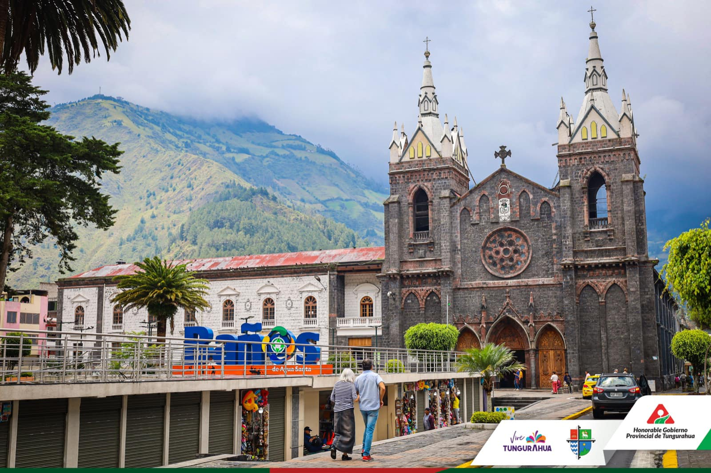
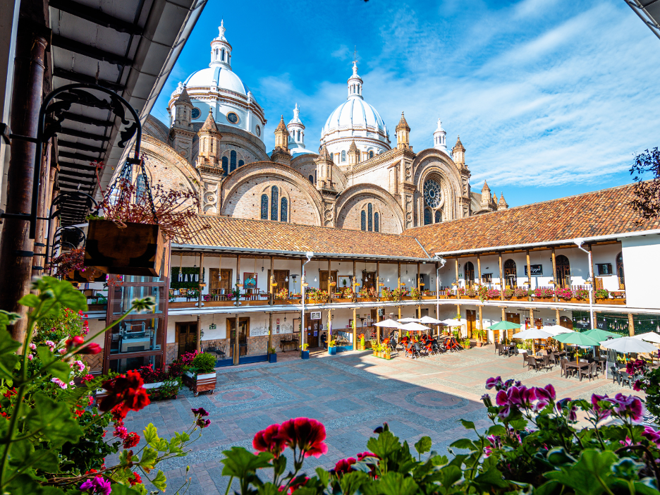

Quito Colonial
Declarado Primer Patrimonio Cultural de la Humanidad por la UNESCO. Disfruta de sus iglesias barrocas, plazas históricas y la vista desde el Panecillo.
Provincia: Pichincha • Región: Sierra
Conoce los cuatro rincones más fascinantes de nuestro país, seleccionados por su riqueza cultural, paisajística y natural.
Declarado Primer Patrimonio Cultural de la Humanidad por la UNESCO. Disfruta de sus iglesias barrocas, plazas históricas y la vista desde el Panecillo.
Provincia: Pichincha • Región: Sierra

El paraíso de la aventura y la naturaleza. Ubicado junto al volcán Tungurahua, famoso por sus cascadas, deportes extremos y aguas termales curativas.
Provincia: Tungurahua • Región: Sierra / Amazonía

Un archipiélago volcánico único en el planeta. Ideal para el buceo, la observación de especies endémicas y paisajes marinos inigualables.
Provincia: Galápagos • Región: Insular

Ciudad patrimonial reconocida por su arquitectura colonial, ríos caudalosos, calles adoquinadas y una pujante tradición artesanal.
Provincia: Azuay • Región: Sierra